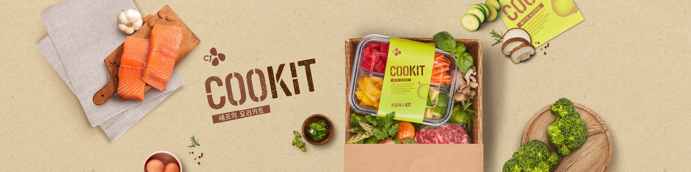
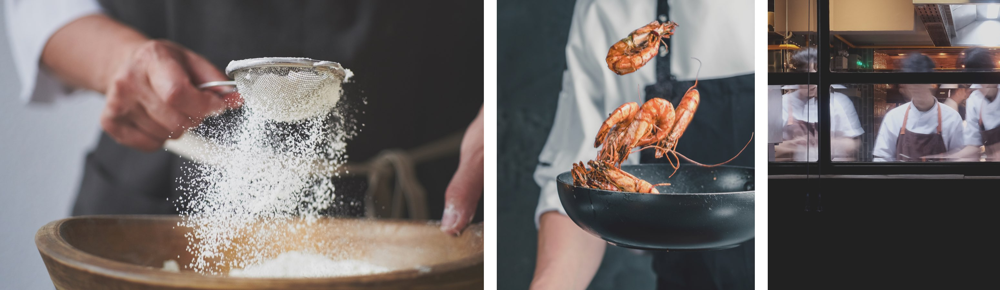
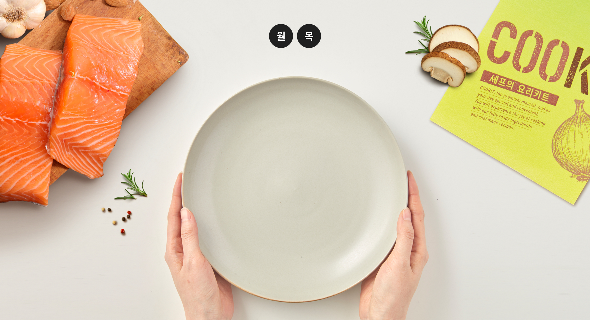
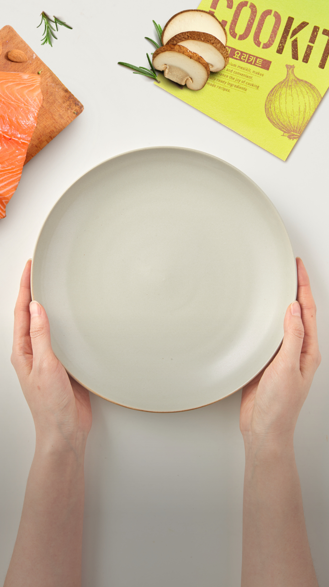
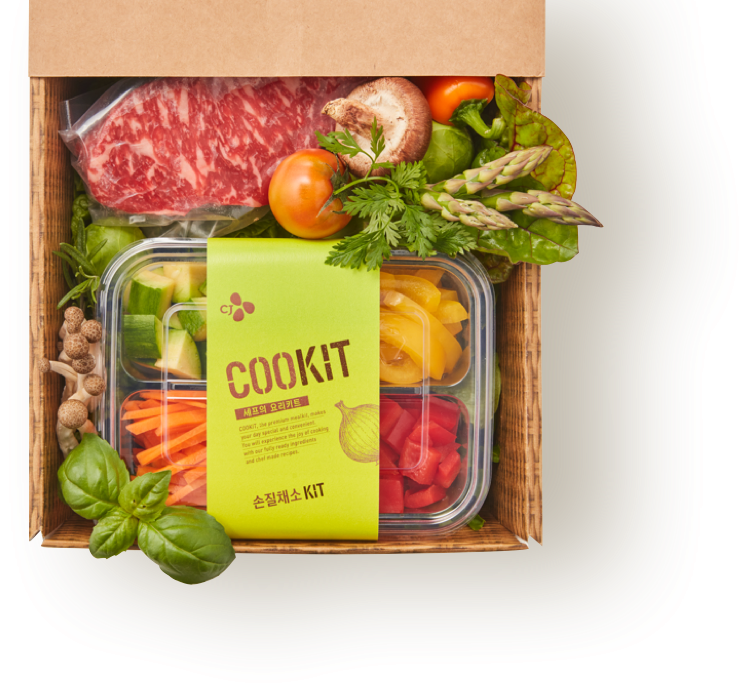

0
로그인해주세요.
MY쿡킷
주문/배송
남은시간
- 리뷰
- COOKIT 소개
- 새벽배송/이용안내
- 이벤트
- 고객행복센터
고객행복센터 1688-1920
평일 8:00 ~ 17:00 / 토요일 8:00 ~ 12:00
(점심시간 12:00 ~ 13:00, 일요일 / 공휴일 휴무)
평일 8:00 ~ 17:00 / 토요일 8:00 ~ 12:00
(점심시간 12:00 ~ 13:00, 일요일 / 공휴일 휴무)
로그인
- 회원가입
- 로그인
- 고객행복센터
- 배송지역검색
-
0
장바구니

'집밥'이라는 단어에는
가족을 이어주는 특별한 힘이 있습니다.
가족을 이어주는 특별한 힘이 있습니다.
하지만 바쁘게 살고 있는 현대인들에게 매일 정성스럽게 집밥을 준비하는 것은 결코 쉽지 않은 일이죠.
그래서 우리는 생각했습니다. “사람들이 요리하고 식사하는 방식이 바뀐다면 집밥이 조금 더 행복해지지 않을까? ”
힘 안들이고 직접 요리할 수 있도록, 맛있는 음식으로 가족을 식탁으로 부르도록,
제철 재료로 맛을 낸 특별식을 집밥으로 즐길 수 있도록, 가족과의 행복한 시간만 남도록
모든 사람들이 셰프가 아니더라도 셰프처럼. 정성스럽게 준비된 식재료로 만든 요리키트로 쉽고 즐겁게
매일, 가족의 식탁에 특별한 집밥을 올려놓을 수 있게
그래서 시작합니다.
그래서 우리는 생각했습니다. “사람들이 요리하고 식사하는 방식이 바뀐다면 집밥이 조금 더 행복해지지 않을까? ”
힘 안들이고 직접 요리할 수 있도록, 맛있는 음식으로 가족을 식탁으로 부르도록,
제철 재료로 맛을 낸 특별식을 집밥으로 즐길 수 있도록, 가족과의 행복한 시간만 남도록
모든 사람들이 셰프가 아니더라도 셰프처럼. 정성스럽게 준비된 식재료로 만든 요리키트로 쉽고 즐겁게
매일, 가족의 식탁에 특별한 집밥을 올려놓을 수 있게
그래서 시작합니다.
분야별 전문 연구진과
CJ의 엄격한 심사기준
CJ의 엄격한 심사기준
나와 내 가족이 먹는다는 생각으로,
푸드 전문가 CJ의 노하우를 담아 원재료를 꼼꼼히 선별합니다.
식자재 유통 No.1 CJ 프레시웨이가 전국 각지의 신선한 제철
농/축/수산물을 찾아, CJ제일제당의 품질안전 전문가들이 국내에서
가장 까다로운 위생기준으로 빈틈없이 평가합니다.
CJ만이 제공할 수 있는 가장 신선한 재료로,
내 가족에게는 최고만 주고 싶은 고객의 마음을 그대로 전합니다.
푸드 전문가 CJ의 노하우를 담아 원재료를 꼼꼼히 선별합니다.
식자재 유통 No.1 CJ 프레시웨이가 전국 각지의 신선한 제철
농/축/수산물을 찾아, CJ제일제당의 품질안전 전문가들이 국내에서
가장 까다로운 위생기준으로 빈틈없이 평가합니다.
CJ만이 제공할 수 있는 가장 신선한 재료로,
내 가족에게는 최고만 주고 싶은 고객의 마음을 그대로 전합니다.
식자재유통 NO.1 CJ프레시웨이
전국각지 신선한 제철재료
25명의 MD가 직접 발로 뛰며
산지의 제철재료를 찾습니다.
산지의 제철재료를 찾습니다.
14인의 품질안전 전문가
선별 재료의 꼼꼼한 평가
원료부터 제품 출고까지 전 단계를
6단계의 깐깐한 체크리스트로
평가합니다.
6단계의 깐깐한 체크리스트로
평가합니다.
HACCP 인증을 획득한 사업장
깨끗한 식재료 준비
채소는 꼼꼼히 3번 세척하고
저온유지로 준비합니다.
저온유지로 준비합니다.
식품 연구소와 패키징 센터
신선함을 전달하는 패키지
재료별 특성에 맞는 포장재를
적용하여 신선함을 높입니다.
적용하여 신선함을 높입니다.
국내 및 글로벌 특급 호텔 경력
최고의 셰프 13인의 메뉴 개발
최고의 셰프 13인의 메뉴 개발
국내 및 글로벌 특급 호텔 경력을 가진 한식, 양식 각 분야 최고의 셰프 13인이 메뉴를 고민합니다.
식감을 살리는 재료의 손질, 육수, 소스부터 메뉴의 지역적 특색까지 고려하는 셰프들의 깊은 고민을 통해
쿡킷의 새로운 메뉴가 만들어집니다.
셰프의 노하우로 일상적인 집밥이 새로워지도록, 외식으로 먹던 특별식이 오늘 나의 집밥이 되도록,
누구나 쉽게 특별한 집밥을 요리할 수 있도록 매일 연구합니다.
식감을 살리는 재료의 손질, 육수, 소스부터 메뉴의 지역적 특색까지 고려하는 셰프들의 깊은 고민을 통해
쿡킷의 새로운 메뉴가 만들어집니다.
셰프의 노하우로 일상적인 집밥이 새로워지도록, 외식으로 먹던 특별식이 오늘 나의 집밥이 되도록,
누구나 쉽게 특별한 집밥을 요리할 수 있도록 매일 연구합니다.


직접 맛보는 듯한 메뉴 영상과
나에게 맞춘 추천
나에게 맞춘 추천
특별한 메뉴에 딱 맞춘 쉬운 레시피로 모든 요리를 쉽고 즐겁게 할 수 있도록 만들어 줍니다.
요리 초보자도 따라 하기 쉬운 레시피카드는 물론 ‘보이는 맛’을 전하는 생생한 요리 영상으로 즐거운 요리 경험을 선사합니다.
15분만에 뚝딱 만드는 집밥 부터, 30분만에 만드는 특별한 메뉴까지 소스를 따로 만들지 않아도,칼질을 못해도, 계량을 하지 않아도
요리에 딱 맞춘 쿡킷의 레시피만 따라 하면 어느새 근사한 요리가 완성됩니다.
요리 초보자도 따라 하기 쉬운 레시피카드는 물론 ‘보이는 맛’을 전하는 생생한 요리 영상으로 즐거운 요리 경험을 선사합니다.
15분만에 뚝딱 만드는 집밥 부터, 30분만에 만드는 특별한 메뉴까지 소스를 따로 만들지 않아도,칼질을 못해도, 계량을 하지 않아도
요리에 딱 맞춘 쿡킷의 레시피만 따라 하면 어느새 근사한 요리가 완성됩니다.
내가 원하는 날, 새벽배송으로
만나는 신선한 재료
만나는 신선한 재료
스마트폰만 있다면 원하는 날짜와 장소로 언제 어디서든 주문할 수 있습니다.
원물의 호흡까지 고려한 전용패키지에 담아 추운 겨울에도,
더운 여름에도 신선함을 그대로 전달합니다.
국내 최대 물류 인프라를 가진 CJ대한통운을 통해 원하는 날의 새벽,
현관 앞에서 쿡킷을 만나실 수 있습니다.
주 5일 배송 (5일 內 고객 희망배송일 지정 가능)
원물의 호흡까지 고려한 전용패키지에 담아 추운 겨울에도,
더운 여름에도 신선함을 그대로 전달합니다.
국내 최대 물류 인프라를 가진 CJ대한통운을 통해 원하는 날의 새벽,
현관 앞에서 쿡킷을 만나실 수 있습니다.
주 5일 배송 (5일 內 고객 희망배송일 지정 가능)
매주 만나는
신선하고 맛있는 신메뉴
신선하고 맛있는 신메뉴
매주 월요일, 목요일에 새롭게 업데이트되는 신메뉴로 날마다 새로운 집밥을 즐기세요!
신메뉴 알림을 신청하시면 SMS/카카오톡 또는 APP PUSH로 알림을 드립니다.
신메뉴 알림을 신청하시면 SMS/카카오톡 또는 APP PUSH로 알림을 드립니다.


FRESH PACKAGING
COOKIT의 야채가
더 신선하게
유지되는 이유!
더 신선하게
유지되는 이유!

COOKIT은 다양한 야채에 대한 연구를 통해
각 특성에 적합한 패키지를 적용하여 야채의 신선도를 높입니다.
각 특성에 적합한 패키지를 적용하여 야채의 신선도를 높입니다.
호흡량이 높은 야채에 적용하는 Breathable Film
눈에 보이지 않는 25~30마이크로미터 크기의 미세한 air-hole을 레이저로
타공하여 패키지 내부의 야채가 숨을 쉬면서 내뱉는 공기를 외부와 순환하게 하여 신선함을 오랫동안 보존합니다.
타공하여 패키지 내부의 야채가 숨을 쉬면서 내뱉는 공기를 외부와 순환하게 하여 신선함을 오랫동안 보존합니다.
호흡량이 낮지만 변색이 잘되는 야채에 적용하는 진공포장
호흡량이 낮더라도 변색이 쉽게 되는 감자, 고구마 같은 야채는 포장재
내 공기를 뺀 진공포장을 적용하여 변색을 최소화합니다.
내 공기를 뺀 진공포장을 적용하여 변색을 최소화합니다.
고유의 향과 맛을 유지할 수 있는 야채 간의 특성을 고려한 그룹핑
색이나 향이 강한 고추, 마늘 같은 야채가 다른 야채에 영향을 주지 않고
고유의 향과 맛을 유지하도록 도와줍니다.
고유의 향과 맛을 유지하도록 도와줍니다.
품질과 환경에 대한 치열한 고민
물 100% 아이스팩
물 100%로만 충진하였기 때문에 배송 후 녹여서 물만 버려주면 되니 쓰레기도
환경오염도 적습니다. 냉동구성품에 투입되는 작은 아이스팩과 아이스박스 안에
들어가는 아이스팩 모두 적용되어 있습니다.
환경오염도 적습니다. 냉동구성품에 투입되는 작은 아이스팩과 아이스박스 안에
들어가는 아이스팩 모두 적용되어 있습니다.
최소의 양으로 가장 신선하게! 이불형 아이스팩
점점 더워지는 날씨, 외부 온도를 차단하여 내부의 냉기가 유지될 수 있도록 연구한
끝에 이불형으로 넓게 덮는 이불형 아이스팩을 적용했습니다.
많이 사용하는 아이스팩 2개 수준이지만 표면적만 넓게 만들어서 적은양으로도 박스
내부 구석구석 온도를 균일하게 유지할 수 있습니다.
끝에 이불형으로 넓게 덮는 이불형 아이스팩을 적용했습니다.
많이 사용하는 아이스팩 2개 수준이지만 표면적만 넓게 만들어서 적은양으로도 박스
내부 구석구석 온도를 균일하게 유지할 수 있습니다.